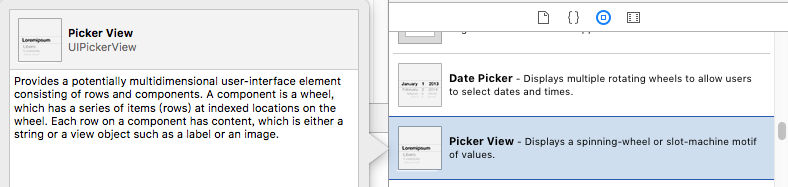
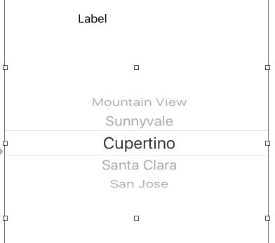
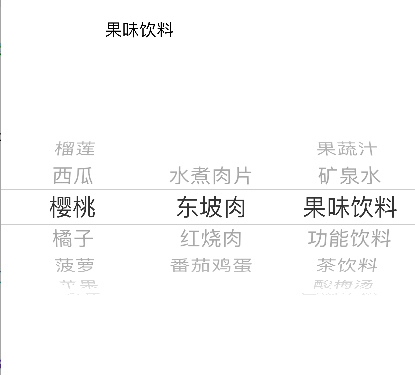

2016/11/01
Author: guoqzuo
iOS选择器UIPickerView和UIDatePicker
Apple提供了两个选择器对象：UIPickerView和UIDatePicker，就像网页里的select。UIDatePicker是时间方面的选择器，用法和UIPickerView差不多，这里先介绍UIPickerView，它可以自定义选择的行和列，每行显示的内容可以是自定义的视图。

storyboard拖拽picker view
这里就不用手动指定了，旨在了解基本的picker view，直接将pickerView控件拖拽到storyboard

数据我们用plist文件存储，foods.plist文件:
<plist version="1.0">
<array>
<array>
<string>榴莲</string>
<string>西瓜</string>
<string>樱桃</string>
<string>橘子</string>
<string>菠萝</string>
<string>苹果</string>
<string>香蕉</string>
</array>
<array>
<string>水煮肉片</string>
<string>东坡肉</string>
<string>红烧肉</string>
<string>番茄鸡蛋</string>
</array>
<array>
<string>果蔬汁</string>
<string>矿泉水</string>
<string>果味饮料</string>
<string>功能饮料</string>
<string>茶饮料</string>
<string>酸梅汤</string>
<string>常温牛奶</string>
</array>
</array>
</plist>数据加载
如果不进行任何设置，运行后你会发现什么都看不到，我们还需要设置相关数据。将控件拖拽关联到ViewController里相应的属性。这里需要遵守UIPickViewDataSource和UIPickerViewDelegate协议，在viewDidLoad函数将pickerView的代理和数据源设置为该控制器view，然后用相应的方法设置数据。详情代码如下：
#import "ViewController.h"
@interface ViewController () <UIPickerViewDataSource,UIPickerViewDelegate>
@property (strong, nonatomic) NSArray* arr; // 根据plist文件加载数据
@property (weak, nonatomic) IBOutlet UILabel *label; // 对应storyboard 的label
@property (weak, nonatomic) IBOutlet UIPickerView *pickView; // 对应storyboard的pickview
@end
@implementation ViewController
- (NSArray*)arr // 将foods.plist文件数据加载到数组
{
if (_arr == nil) {
NSString* filePath = [[NSBundle mainBundle] pathForResource:@"foods.plist" ofType:nil];
_arr = [[NSArray alloc] initWithContentsOfFile:filePath];
}
return _arr;
}
// UIPickerViewDataSource协议必须实现的方法
// returns the number of 'columns' to display.
- (NSInteger)numberOfComponentsInPickerView:(UIPickerView *)pickerView {
//return 3;
//return _arr.count; // 会加载不出数据，以后最好使用self，少用_开头的方式，.会默认调用get，set方法
return self.arr.count; // 数组列数
}
// returns the # of rows in each component..
- (NSInteger)pickerView:(UIPickerView *)pickerView numberOfRowsInComponent:(NSInteger)component
{
// return 5;
NSArray* arr1 = self.arr[component];
return arr1.count; // 对应每一列的行数
}
// 设置行高
//- (CGFloat)pickerView:(UIPickerView *)pickerView rowHeightForComponent:(NSInteger)component __TVOS_PROHIBITED {
// return 100;
//}
// 返回对component列第row行的标题
- (nullable NSString *)pickerView:(UIPickerView *)pickerView titleForRow:(NSInteger)row forComponent:(NSInteger)component __TVOS_PROHIBITED {
// if (row == 1 && component == 1) // 第一行第一列(从零开始)
// return @"abc";
// else
// return @"kkk";
NSArray* arr1 = self.arr[component];
return arr1[row];
}
// 给文本添加一些属性, 富文本, 可设置文本颜色，字体，阴影等
//- (nullable NSAttributedString *)pickerView:(UIPickerView *)pickerView attributedTitleForRow:(NSInteger)row forComponent:(NSInteger)component NS_AVAILABLE_IOS(6_0) __TVOS_PROHIBITED; // attributed title is favored if both methods are implemented
//- (UIView *)pickerView:(UIPickerView *)pickerView viewForRow:(NSInteger)row forComponent:(NSInteger)component reusingView:(nullable UIView *)view __TVOS_PROHIBITED;
//
//
// 监听选中
- (void)pickerView:(UIPickerView *)pickerView didSelectRow:(NSInteger)row inComponent:(NSInteger)component __TVOS_PROHIBITED {
//NSLog(@"%ld %ld", component, row);
NSString* title = self.arr[component][row];
_label.text = title;
}
- (void)viewDidLoad {
[super viewDidLoad];
// Do any additional setup after loading the view, typically from a nib.
_pickView.dataSource = self;
_pickView.delegate = self;
}效果:
